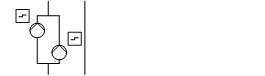
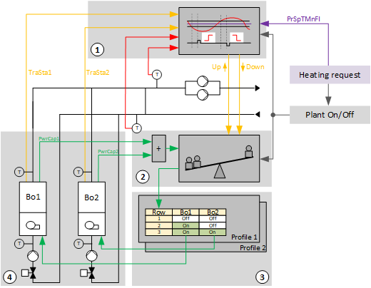
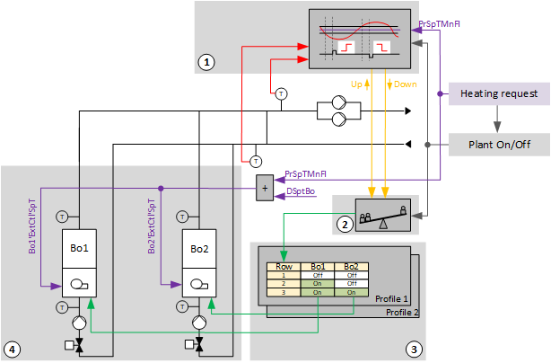

[HGen22] Heat generation, 2 boilers with external boiler control (on/off command, setpoint, feedback, common fault)
Plant example HGen22 has two identical boilers with own control (external control).
Functions
- Collects heat demand and controls to the corresponding setpoint
- Boiler sequence control
- Logic for power control based on a comparison of the setpoint versus actual value on the main flow and delay times
- Profile changeover
Plant diagram

Components
- 2 identical boilers with own control
- Bypass between main flow and main return (hydraulic separator)
- Main pump group, consumer side
Components and functions
Components and functions of the plant example:
Component | Function | BACnet object |
|---|---|---|
| Sensor for outside temperature Measures outside temperature. | > [AI] Outside air temperature |
| Fire detection contact Switches the plant off. | [BI] Fire detection contact |
| Operating mode switch Switches the plant to: Auto | Off | On | [MI] Operating mode switch |
| Manual operating mode selection Switches the plant to: Auto | Off | On | [MCnfVal] Manual operating mode selection |
Profile selector. Switches the profile to: Auto | Profile 1 | Profile 2 | [MI] Profile switch [MCalcVal] Present profile | |
| Manual profile selection Switches the profile to: Auto | Profile 1 | Profile 2 | [MCnfVal] Manual profile selection |
| Present operating mode Reports the present operating mode: Off | On | [MCalcVal] Present operating mode |
| Reason for present operating mode Reports the reason for the present operating mode: Exception | Operating mode switch | Manual operating mode selection | Heat request | [MCalcVal] Reason for present operating mode |
| Heat request Acquires and evaluates the heat request. | [ACnfVal] Offset for setpoint heating request [ACnfVal] Minimum setpoint heating request |
 | Main pump group, consumer side Switches on/off one pump each time based on demand. Selects the pump based on pump operating hours. |
> [BO] Command pump 1 > [BO] Command pump 2 |
Reports the fault on the corresponding pump and switches it off. The backup pump is switched on if needed and possible. The plant is switched off if both pumps are in fault. | > [BI] Fault pump 1 > [BI] Fault pump 2 | |
Hydraulic separator, temperature measurement |
| |
Main flow temperature sensor Measures the main flow temperature on the consumer side. | [AI] Main flow temperature consumer side | |
Main return temperature sensor Measures the main return temperature on the generation side. | [AI] Main return temperature generation side | |
| Setpoint determination Calculates the setpoint for the boiler temperature. | [ACalcVal] Present setpoint for main flow temperature [ACnfVal] Delta setpoint for boiler temperature |
| Step up/down Selects the relevant temperature sensor based on the maximum value. Compares the setpoint against the relevant actual value (max selection) and demands more or less power after a delay. |
|
| Power control and compensation Acquires the power demand. Compensates power demand by profile tables in two directions:
|
|
| Profile table Table of the sequence operation of boilers and their stages. Each additional line in the table (up or down) represents additional power. Controls the boiler by heat request and predefined sequence. Determines whether to add or switch off a boiler. |
|
| Fault message expansion vessel Switches the plant off. | [BI] Fault expansion vessel |
| Boilers 1 & 2 Two identical boilers |


 Main pump group
Main pump group

Boilers 1 & 2
Component | Function | BACnet object |
|---|---|---|
| Boilers 1/2 |
|
| Manual switch Switches off the boiler. Auto | Off | On | [MI] Manual switch |
| Boiler temperature Sensor for boiler temperature Measures the boiler temperature. | [AI] Temperature |
| Safety temperature limiter Monitors the boiler temperature. Switches off external control of the boiler. Keeps the shutoff valve open and switches on the boiler pump for two minutes. The shutoff valve is then closed and the pump switched off. | > [BI] Safety temperature limiter |
| Interface to external control |
|
Release Release for external control | > [BO] Command | |
Setpoint for boiler temperature Transfers a temperature setpoint for external control. | > [AO] Temperature setpoint | |
Fault message Reports faults. Switches off the boiler. | > [BI] Fault | |
Feedback, binary | > [BI] Feedback | |
| Return temperature sensor Measures the return temperature. | [AI] Return temperature |
| Pump |
|
Command Switches on/off the pump as needed. | > [BO] Command | |
Fault message Reports faults. Switches off the boiler. | > [BI] Fault | |
| Shutoff valve Locks the boiler return up/down. |
|
Command Closes or opens the boiler circuit: Close | Open | > [BO] Command |


Functions and diagrams
Overview
The following diagram is a simplified illustration of plant example HGen22.

PrSpTMnFl | Present setpoint for main flow temperature | Bo1 | Boiler 1 |
Bo2 | Boiler 2 | TraSta1 | Transient state 1 |
TraSta2 | Transient state 2 | PwrCap1 | Available power 1 |
PwrCap2 | Available power 2 |
Step up/down (1)

DlyUp | Delay for an up impulse | DlyDn | Delay for a down impulse |
Nz | Neutral zone | TraSta1 | Transient state 1 |
TraSta2 | Transient state 2 | PrSpTMnFl | Present setpoint for main flow temperature |
TMnRt | Temperature in the main return prior to the hydraulic separator (generator side) | TMnFl | Temperature in the main flow after the hydraulic separator (consumer side) |
Important settings:
- Neutral zone (Nz) = 3 K
- Delay for up impulse (DlyUp) = 10 min
- Delay for down impulse (DlyUp) = 10 min
If the function is enabled, the higher value of the two temperatures in main flow 'TMnFl' and main return 'TMnRt' is selected as the controlled variable. If the measured temperature exits the neutral zone 'Nz' by setpoint 'SpT', an impulse "Step up" or "Step down" is sent over output 'StepUp' or 'StepDn' to power balance. The impulse is sent with a delay. The delays are determined using the settings 'DlyUp' and 'DlyDn'.
There are two cases:
- One or both temperatures drop. Pulse "Step up" is generated.
Heat generation supplies too little power and/or flow in the consumer circuit is higher than in the generation circuit. - One or both temperatures increase. Pulse "Step down" is generated.
Heat generation supplies too much power and/or flow in the consumer circuit is lower than in the generation circuit.
To prevent continued switching prematurely, the evaluation logic is held after each impulse. The enabled heat generator returns its 'TraSta' to "Step up/down". The evaluation logic restarts once the transition state expires.
Power control and compensation (2)

PwrCap1 | Available power 1 | PwrCap2 | Available power 2 |
EnCmpLack | Automatic power compensation for a loss of power |
Important settings:
- Automatic power control and compensation for a loss of power (EnCmpLack) = 1 (see below)
Power control and compensation receive the request from "Step up/down" for more or less power as a result of the pulse "Step up" or "Step down". In this way, Power control and compensation" triggers a change to the following or previous line in the profile table.
"Power control and compensation" then checks whether the change in row in the "profile table" resulted in the desired increase or reduction to the currently produced output. It receives the feedback on input [PwrCap] on the power currently produced and compares it against the value in internal memory [PrPwrCap].
In the event that the desired result does not arrive, "Power control and compensation" changes the row until the desired increase or reduction to current power is reached.
Automatic power compensation in the event of a power shortage [EnCmpLack]: Power shortage is detected based on input [PwrCap] and balanced by sequential steps, e.g. due to a loss of a heat generator due to a fault.
Profile table (3)
In the profile table, the sequence is determined for switching on the heat generators. Four different profiles can be created. The entries are entered in each profile so that total power of the enabled heat generators or stages increases as the row number increases.
Function block SELP_8MS determines the profile table.
Two profiles are prepared in the example:
Profile 1: Boiler 1 is switched on first.

Boiler 1 (100 KW) is a boiler with own control.
Boiler 2 is added in the following 2 cases:
- The power for boiler 1 is not sufficient
- Boiler 1 is in fault
Profile 2: Boiler 2 is switched on first.

Boiler 2 (100 KW) is a boiler with own control.
It changes over to boiler 1 in the following 2 cases:
- The power for boiler 2 is not sufficient
- Boiler 2 is in fault
A profile changeover is planned in the example, based on the boiler operating hours.
Manual profile selection is also possible.
The profile changeover is implemented in function block ROT_8.
Heat generator (Boiler 1 and 2) (4)
The heat generators enabled by the profile table report on available power [PwrCap] to power control and compensation.
They also report in the event of an active change of the power stage, the transient state [TraSta] to "Step up/down". No further "Step up" or "Step down" is triggered during an active transient state.

TraSta1 | Transient state 1 | TraSta2 | Transient state 2 |
PwrCap1 | Available power 1 | PwrCap2 | Available power 2 |
Bo1 | Boiler 1 | Bo2 | Boiler 2 |
SwiOnTra | Transient state at switch-on | SwiOffTra | Transient state at switch-off |
Boiler 1/2 with external control, single-stage pump, shutoff valve
Operating modes: Off, On, Min.
Settings for power feedback:
Complete the power settings on function block SELMS_R
1 Off = 0 KW
2 On = 100 KW
Settings for feedback of the transient state on the nested chart BoTraSta(1):
Components, sequence, and functions in CMDSEQ_B (Bo1/2)
Plant operating mode | Component | ||
|---|---|---|---|
|
| Vlv | Pu | ExtCtl |
Off | Off | Off | Off |
On | On | On | On |
| |||
Sequences |
| ||
Start sequence | 1 | 2 | 2 |
Start function | Feedback | AND (Group with next aggregate) | AND (Group with next aggregate) |
Start delay | - | - | - |
| |||
Stop sequence | 2 | 2 | 1 |
Stop function | AND (Group with next aggregate) | AND (Group with next aggregate) | Delay |
Stop delay | - | - | 2m |
Start sequence
- The shutoff valve opens. It is further switched if an operating message comes from the shutoff valve on the input pin for CmdSeq(Bo1).
- The pump and external control coil switch on at the same time (function AND, Group with next aggregate).
Stop sequence
- External control switches off. It waits for 2 minutes (function Delay).
- The shutoff valve closes and the pump switches off (Function AND, Group with the next aggregate).
Main pump group, consumer side
The example implements two main pumps, each with a fault message.
The changeover occurs:
- Every 168 hours regardless of operating hours
- Regardless of fault
The changeover is implemented in function block ROT_8.
Setpoint generation and temperature control
Individual heat consumption transmits its heat request and forms the temperature setpoint for main flow as per this heat request. The setpoint is increased slightly and sent to the heat generators.

PrSpTMnFl | Present setpoint for main flow temperature | DSpTBo | Delta setpoint for boiler temperature |
Bo1 | Boiler 1 | Bo2 | Boiler 2 |
Bo1'ExtCtl'SpT | Setpoint for boiler 1 | Bo2'ExtCtl'SpT | Setpoint for boiler 2 |
Plant operating modes and control sequence
Plant operating modes:
- Off (1)
- On (2)
The operating modes are reported on [MCalcVal] object 'Present operating mode'.
At the same time, the reason for the present operating mode is reported to another [MCalcVal] object:
- Exception (1)
- Operating mode switch (2), resulting from an active (not equal to Auto) operating mode switch
- Operating mode (3), resulting from an active (not equal to Auto) manual operating mode selection
- Heat request (4)
There is a normal mode and exception mode.
Normal operation
Sources for normal mode:
- [MI] Operating mode switch
- [MCnfVal] Manual operating mode selection
- [HReq (1)] Heat request
In normal operation, operating mode 'On', the main pumps are switched on and the logic for boiler sequence operation (step up/down, power control and compensation and profile table) is enabled. The logic for boiler sequence operation controls the individual energy generators using their CMDSEQ_B function blocks.
Exception mode
Sources for exception mode:
- Fire detection contact
- Fault to expansion vessel
- Faults to both pumps in the main pump group
- Fault to both boilers
In exception mode, all outputs are switched off directly at priority 5 and the present operating mode is set to 'Off'.
It is reported on input [RpdOff] from all CMDSEQ_B on the energy generators.
Start-up control and alarm handling
Start-up control (nested chart SttUpAlmHdl)
The following functionality is available for an automatic startup of the plant, e.g. after a loss of power and return of power:
- Fixed switch-on delay (can be set on input pin [DlySttUp])
- The plant remains off to ensure communications are reliable and cross-check references are triggered. 'Exception' is reported as the reason for the present operating mode.
- Automatic acknowledge (2x) of possible pending alarms during a fixed switch-on delay.
- Additional adjustable delay for staged plant ramp-up (can be set on input pin [DlyOn])
Alarm handling (nested chart SttUpAlmHdl)
The state of events on the plant is acquired by BACnet object 'Plant state'. The state is mapped on function block [CMN_EVT] Common event.
The following functions are available:
- Automatic acknowledge (2x) after startup
- Alarm acknowledgement with a value object
- Alarm indication:
- For pending alarms On
- For unprocessed alarms flashing - Ability to connect the acknowledge button [BI]
- Ability to connect to an alarm indication [BO], e.g. an alarm lamp through an output block [BO]
- Ability to connect to other alarm handling functions on other plants, e.g. acknowledge button and alarm indication for multiple plants in the same control cabinet
I/O data points
Name | Description | Type | Signal/connection | State text | Engineering unit |
|---|---|---|---|---|---|
FireDetCont | Fire detection contact Alarm function: Extended (Notification class 7) Reference value: Tripped Time deviation: 0 [s] | BI | Contact NC | Normal | Tripped | N/A |
OpModSwi | Operating mode switch | MI | N/A | Auto | Off | On | N/A |
TOa | Outside air temperature | AI | LG-Ni1000 | N/A | -70...70 [°C]
|
PrfSwi | Profile switch | MI | N/A | Auto | Profile 1 | Profile 2 | N/A |
FltPu (1) | Fault pump (1) Alarm function: Extended (Notification class 7) Reference value: Tripped Time deviation: 0 [s] | BI | Contact NO | Normal | Tripped | N/A |
FltPu (2) | Fault pump (2) Alarm function: Extended (Notification class 7) Reference value: Tripped Time deviation: 0 [s] | BI | Contact NO | Normal | Tripped | N/A |
CmdPu (1) | Command pump (1) | BO | Contact NO | Off | On | N/A |
CmdPu (2) | Command pump (2) | BO | Contact NO | Off | On | N/A |
TMnFlCns | Main flow temperature consumer side | AI | LG-Ni1000 | N/A | 0...100 [°C] |
TMnRtGen | Main return temperature generation side | AI | LG-Ni1000 | N/A | 0...100 [°C] |
FltExpsVss | Expansion vessel fault | BI | Contact NO | Normal | Tripped | N/A |
Bo1'ManSwi | Boiler 1 manual switch | MI | N/A | Auto | Off | On | N/A |
Bo1'T | Boiler 1 temperature | AI | LG-Ni1000 | N/A | 0...100 [°C] |
Bo1'TRt | Boiler 1 return temperature | AI | LG-Ni1000 | N/A | 0...100 [°C] |
Bo1'SftyTLm | Boiler 1 Safety temperature limiter Alarm function: Basic (Notification class 8) Reference value: Triggered Time deviation: 0 [s] | BI | Contact NO | Normal | Tripped | N/A |
Bo1'ExtCtl'Flt | Boiler 1 external control fault Alarm function: Basic (Notification class 8) Reference value: Triggered Time deviation: 0 [s] | BI | Contact NC | Normal | Tripped | N/A |
Bo1'ExtCtl'Fb | Boiler 1 external control feedback | BI | Contact NO | Off | On | N/A |
Bo1'ExtCtl'SpT | Boiler 1 external control temperature setpoint | AO | 0...10V | N/A | 0...100 [°C] |
Bo1'ExtCtl'Cmd | Boiler 1 external control command | BO | Contact NO | Off | On | N/A |
Bo1'Pu'Cmd | Boiler 1 pump command | BO | Contact NO | Off | On | N/A |
Bo1'Pu'Flt | Boiler 1 pump fault Alarm function: Extended (Notification class 7) Reference value: Triggered Time deviation: 0 [s] | BI | Contact NO | Normal | Tripped | N/A |
Bo1'Vlv'Pos | Boiler 1 valve command | BO | Contact NO | Close | Open | N/A |
Bo2'ManSwi | Boiler 2 manual switch | MI | N/A | Auto | Off | On | N/A |
Bo2'T | Boiler 2 temperature | AI | LG-Ni1000 | N/A | 0...100 [°C] |
Bo2'TRt | Boiler 2 return temperature | AI | LG-Ni1000 | N/A | 0...100 [°C] |
Bo2'SftyTLm | Boiler 2 safety temperature limiter Alarm function: Basic (Notification class 8) Reference value: Triggered Time deviation: 0 [s] | BI | Contact NO | Normal | Tripped | N/A |
Bo2'ExtCtl'Flt | Boiler 2 external control fault Alarm function: Basic (Notification class 8) Reference value: Triggered Time deviation: 0 [s] | BI | Contact NC | Normal | Tripped | N/A |
Bo2'ExtCtl'Fb | Boiler 2 external control feedback | BI | Contact NO | Off | On | N/A |
Bo2'ExtCtl'SpT | Boiler 2 external control temperature setpoint | AO | 0...10V | N/A | 0...100 [°C] |
Bo2'ExtCtl'Cmd | Boiler 2 external control command | BO | Contact NO | Off | On | N/A |
Bo2'Pu'Cmd | Boiler 2 pump command | BO | Contact NO | Off | On | N/A |
Bo2'Pu'Flt | Boiler 2 pump fault Alarm function: Extended (Notification class 7) Reference value: Triggered Time deviation: 0 [s] | BI | Contact NO | Normal | Tripped | N/A |
Bo2'Vlv'Pos | Boiler 2 valve command | BO | Contact NO | Close | Open | N/A |